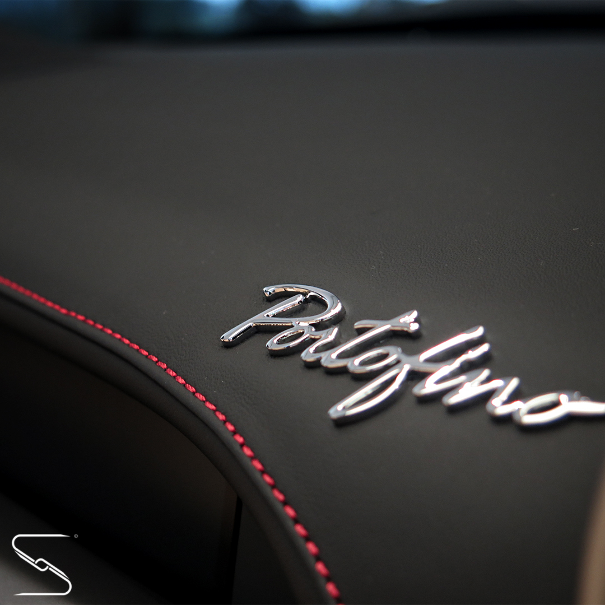

Jestem Seweryn Nekrasz.
Motoryzacja była przy mnie od kiedy pamiętam.
Zawsze, jako małe dziecko, zastanawiało mnie czy kiedyś w życiu przejadę się/poprowadzę albo chociaż zobaczę na własne oczy Lamborghini czy Ferrari.
Gdy po raz pierwszy spotkałem się z takim supersamochodem byłem po prostu wniebowzięty.
Szybko zacząłem jednak żałować jednego - nie zrobiłem mu zdjęcia.
Gdy kolejny raz miałem do czynienia z takim autem, byłem pewien jednego - taka maszyna zasługuje na niebylejakie zdjęcie.
Dlatego rozwinąłem swoją pasję fotograficzną i tak powstało:
Seweryn Nekrasz Automotive Photography

E-Mail: nekraszseweryn@gmail.com
Instagram